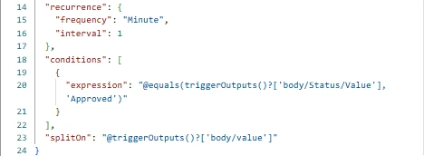
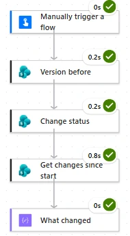

- Power Automate
- Level 8 · Real-world patterns · 2 of 8
Guarding trigger loops and detecting column changes
A flow that starts When an item is modified and then updates the same item modifies it again, which starts the flow again: an endless loop. The same trigger also fires for any edit, even one that doesn't matter. Two tools solve both problems: trigger conditions and Get changes for an item.
Breaking the loop
| Approach | Trigger condition |
|---|---|
| Ignore edits made by the flow's account | @not(equals(triggerOutputs()?['body/Editor/Email'], 'svc-flows@contoso.com')) |
| Run only for a specific status | @equals(triggerOutputs()?['body/Status/Value'], 'Approved') |
| Use a "processed" flag the flow sets | @not(equals(triggerOutputs()?['body/Processed'], true)) |
A trigger condition is checked before a run starts, so skipped edits cost nothing and don't appear in run history. The first option works best when flows run under a service account, which also makes the condition easy to read.

Did this column change?
Get changes for an item or a file (properties only) compares the item now with an earlier version and returns true or false for every column. The demo reads the version number, changes only Status, then asks what changed:


outputs('Get_changes_since_start')?['body/ColumnHasChanged/Status']| Piece | What it does |
|---|---|
ColumnHasChanged | An object with one true/false value per column. |
/Status | The column you care about. Use the internal name. |
A real error from the demo. The first try passed a date and time as Since and failed with Invalid format for version input value. Since takes a version label (like 3.0, from the item's {VersionNumber}) or, in a triggered flow, the trigger's window start token. Versioning must be on for the list.
New to this? Start from the basics optional
Trigger condition: an expression in the trigger's Settings. The flow runs only when it is true.
Version history: SharePoint keeps a numbered copy of an item each time it is saved, if versioning is on.
Build it step by step optional
- Open the trigger's Settings and add a trigger condition that excludes the flow's own edits.
- Turn on versioning in the list settings.
- Add Get changes for an item or a file (properties only) with the item ID and Since set to the trigger window start token.
- Add a Condition on
ColumnHasChanged/YourColumnand do the work only when it is true.
Common mistakes
- Updating the triggering item with no guard. The flow runs every minute until someone turns it off.
- Putting the check in a Condition action instead of a trigger condition. The loop still runs; it just ends early each time.
- Passing a date as Since. Use a version label or the trigger token.